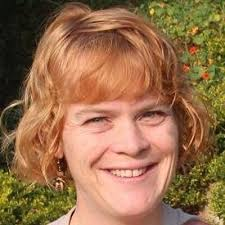

Coordinating & Admin Team
Dr. Lea Berrang Ford - GAMI Lead
Lea is a Research Chair in Climate and Health in the Priestley International Centre for Climate Research at the University of Leeds (UK). She has extensive experience with systematic approaches for adaptation tracking globally, and has contributed to the UNDEP-DTU Adaptation Gap Report (2017) that reviewed methods for assessing progress towards the global adaptation goal. Lea is a Lead Author on Chapter 16 (synthesis of risks) of the IPCC AR6 WGII report. She is the Lead Researcher on this initiative.

Dr Neal Haddaway - Evidence Synthesis Advisor
Neal works at the Stockholm Environment Institute (SEI) in Stockholm as a Senior Research Fellow specialising in evidence synthesis. He also leads the Collaboration for Environmental Evidence (CEE) Centre at SEI. Neal brings particular expertise in methodological guidance related to systematic review methods and is involved in a number of working groups with CEE. He has over 7 years’ experience of working with evidence synthesis and delivering training in review methods. Neal is endorsed by CEE as a systematic review trainer. He is our Team Lead for Systematic Review Methods and Infrastructure on this initiative.
Prof. Jan Minx - Data Analytics Advisor
Jan is is head of the Applied Sustainability Science working group at the Mercator Research Institute on the Global Commons and Climate Change (Germany), and Professor for Climate Change and Public Policy at the Priestley International Centre for Climate at the University of Leeds. He has previously been Head of the Technical Support Unit of the Working Group ‘Mitigation of Climate Change’ of the Intergovernmental Panel on Climate Change (IPCC), where he coordinated the Working Group’s contribution to AR5, and is a Lead Author within the IPCC AR6 WGIII. Jan is our Lead Researcher for Data Analysis and 'Big Literature'.
Max Callaghan - Data Analytics Coordinator
Max is a PhD student at the University of Leeds and a researcher in the Applied Sustainability Sciences working group at the Mercator Research Institute on the Global Commons and Climate Change (Germany). He works on quantitative methods to interpret and synthesize large collections of scientific research (or “Big Literature”) about climate change. He has been a key lead in developing the computational platform and tools for document analysis being used by our initiative for the screening stage. Max is our Lead Developer for the initiative's screening platform, training, and design.
Dr. Paige Fischer - Screening Coordinator
Paige is an Assistant Professor at the School for Environment and Sustainability at the University of Michigan (USA). She brings particular expertise in characterizing adaptation typologies for adaptation within socio-ecological systems. Paige is Lead Coordinator for the Screening Team.
Dr. Alex Lesnikowski - Coding Coordinator
Alex is a Postdoctoral Research Fellow in the Department of Geography and Environmental Management and Interdisciplinary Centre on Climate Change at the University of Waterloo (Canada). She is an expert in comparative and systematic assessment of adaptation policy and governance. Alex is Lead Coordinator for the Coding Team.
Prof. AR Siders - Synthesis Coordinator
Siders is an Assistant Professor at the Disaster Research Center of the University of Delaware. Her research focuses on climate change adaptation policies with an emphasis on managed retreat (relocation of people and assets away from risk) and environmental justice. She is a member of Climigration Network, Ocean Visions and Global Center for Climate Resilience.
Dr. Katharine Mach - Expert Elicitation Coordinator
Katharine is an Associate Professor in the Department of Marine Ecosystems and Society and a Faculty Scholar at the in the Abess Center for Ecosystem Science and Policy at the University of Miami Rosenstiel School of Marine and Atmospheric Science . Prior to joining the UM faculty, Mach was a senior research scientist at Stanford University and director of the Stanford Environment Assessment Facility. From 2010-15, Katharine co-directed the scientific activities of the IPCC's WGII towards AR5. She is a Lead Author on Chapter 1 of the IPCC AR6 WGII report. Katharine brings expertise in innovative approaches for evidence synthesis, and is the Lead Coordinator of the Expert Solicitation phase of this initiative.
 Sherilee Harper (Canada, WGII)
Sherilee Harper (Canada, WGII)